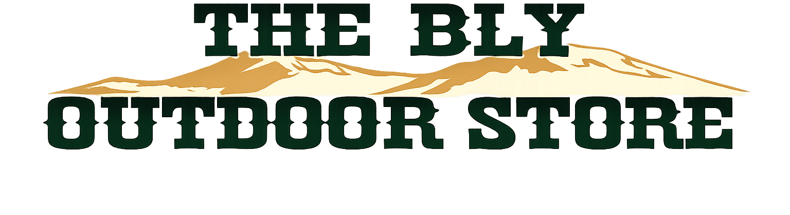
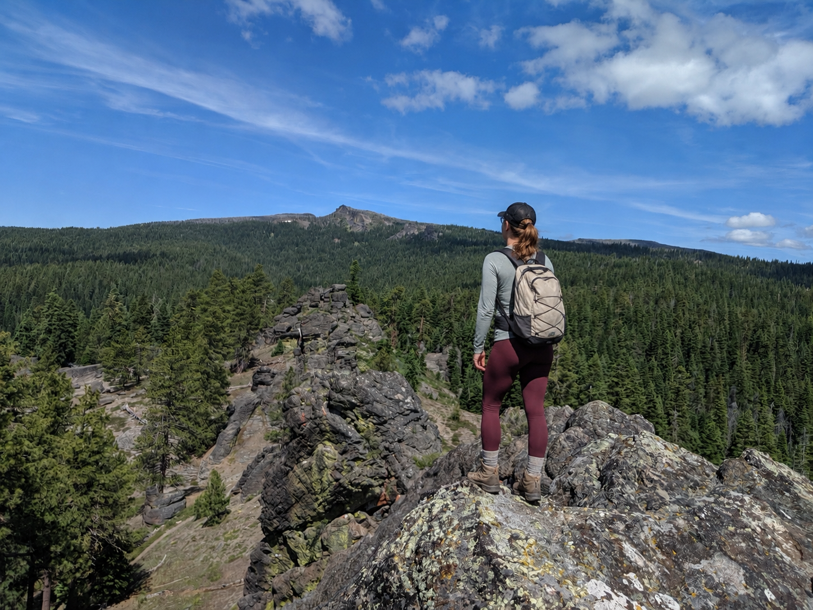
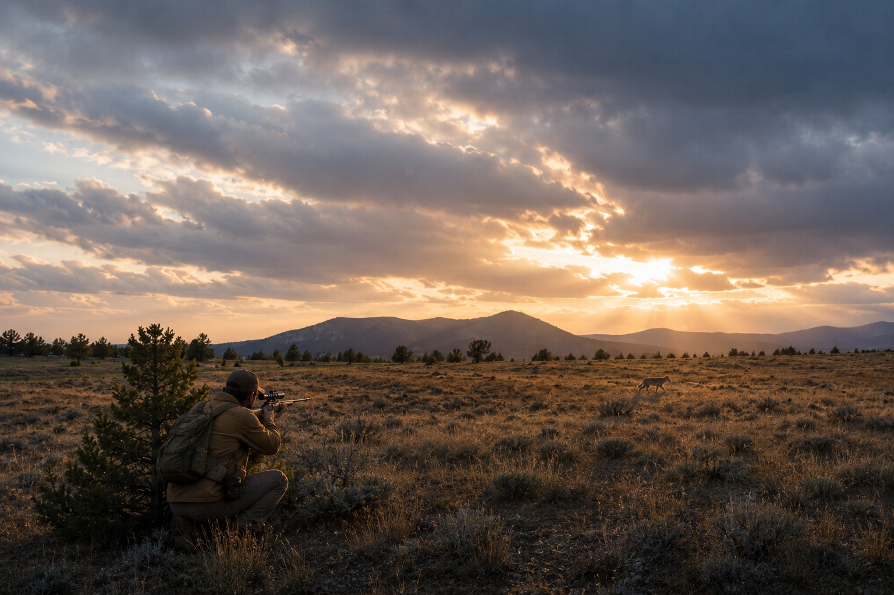
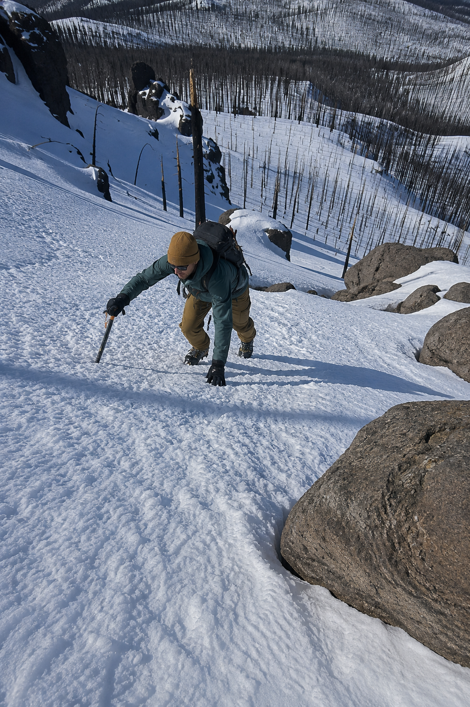
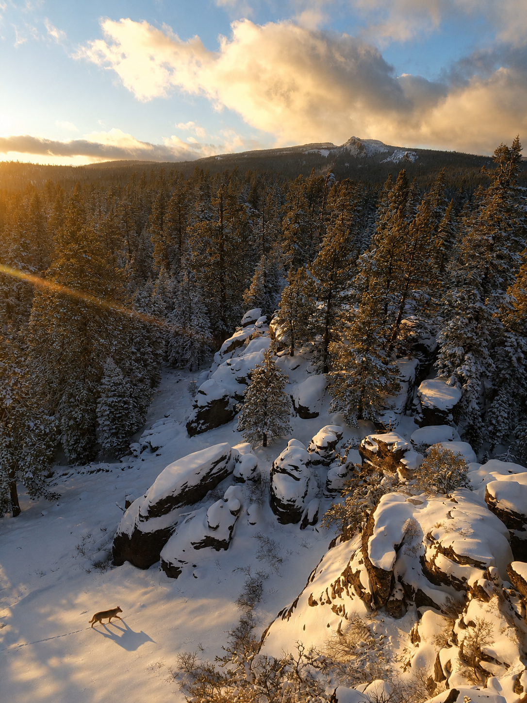
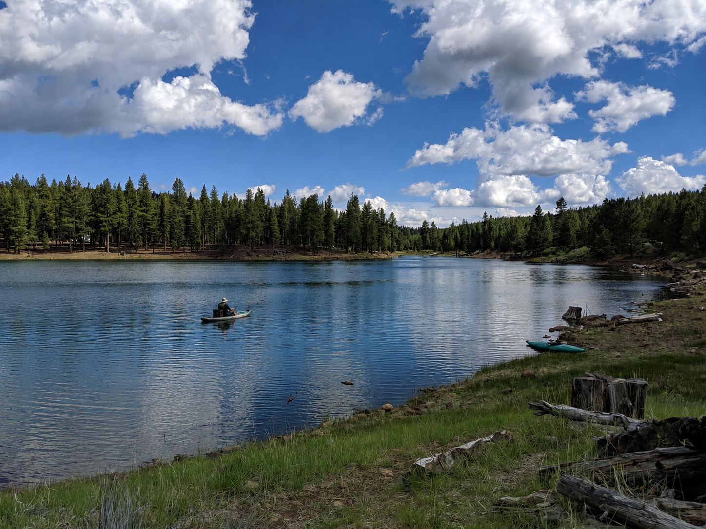
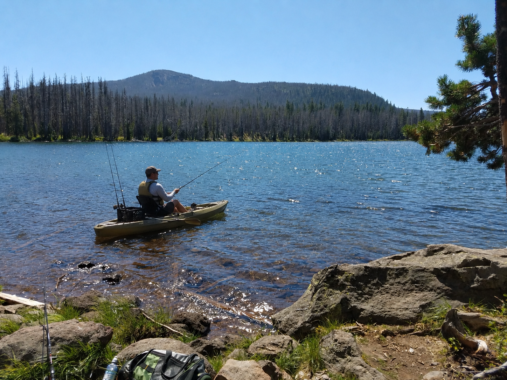

Firearm Safety Instruction
Learn from professionals dedicated to responsible ownership.


Welcome to Bly, Oregon
Explore the great outdoors with top-quality gear, reliable brands, and expert advice from people who live and breathe adventure.

About Us
The Bly Outdoor Store brings outdoor supplies, practical local knowledge, and dependable service together in one place for Bly and the surrounding region.
Meet the family behind the store and learn how life in South Central Oregon guides the way we serve our customers and community.

Explore Oregon
We’re here to help you plan, pack, and prepare. Stop by for expert recommendations, community events, and all the gear you need to explore Oregon’s wild side.
From the mountains and forests to the lakes and open country around Bly, dependable equipment and practical local knowledge can make every trip better.
Find Us in BlySpecial Services & Classes
Safety and skill go hand-in-hand with adventure. Our certified instructors offer courses designed to keep you and your loved ones confident outdoors.
Learn from professionals dedicated to responsible ownership.
Get certified and stay compliant with Oregon state laws.
Join our local workshops, hunting clinics, and seasonal outdoor gatherings.
Our Gallery
Explore snapshots of our community living the outdoor life.






We’re honored to serve the people who make Bly, Oregon special — hardworking families, adventurers, and outdoor lovers who embody the spirit of the West.
Come visit us and experience a tradition of service, quality, and connection that’s been part of this town for generations.
Get Directions